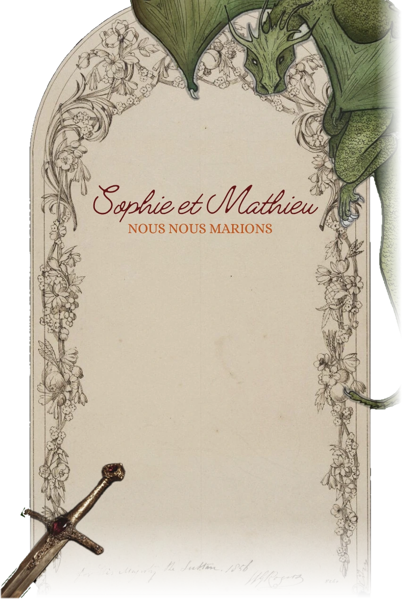

Save the Date
Samedi
Domaine de Fourniol Septfonds · Tarn-et-Garonne
--jours
--heures
--minutes
--secondes
C'est le grand jour !
Faire-part à suivre…

Save the Date
Samedi
Domaine de Fourniol Septfonds · Tarn-et-Garonne
C'est le grand jour !
Faire-part à suivre…